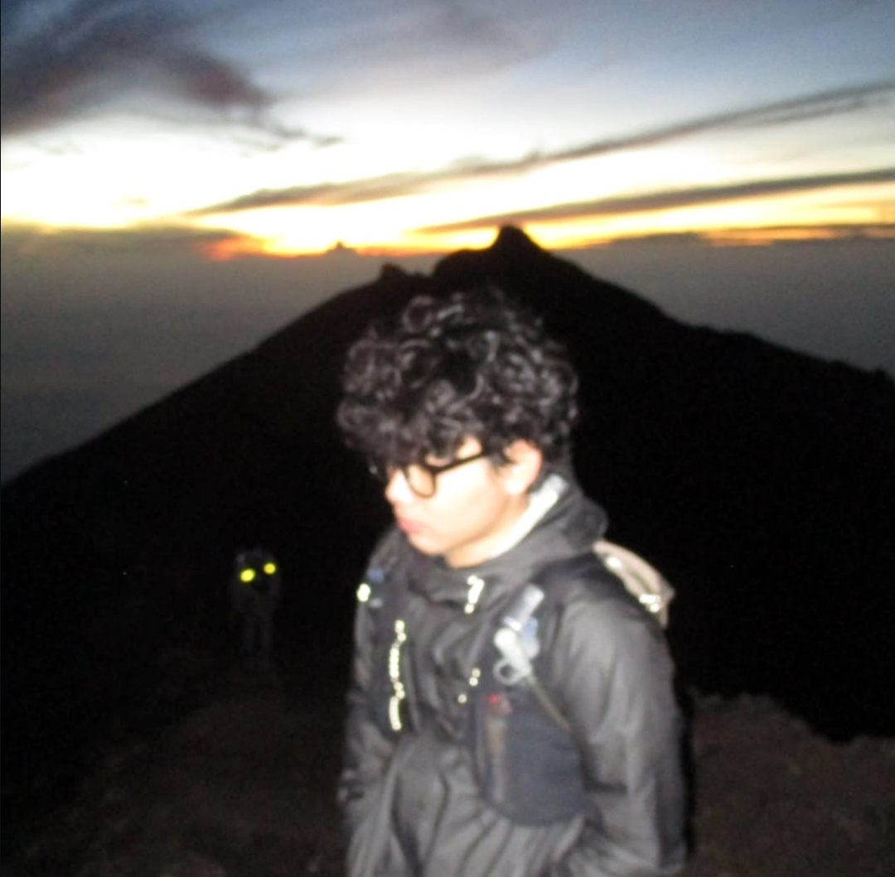

HALO, SELAMAT DATANG!
Saya adalah mahasiswa Sistem Komputer yang memiliki ketertarikan dalam bidang teknologi, jaringan komputer, pemrograman, dan pengembangan web. Saya senang mempelajari hal baru serta mengembangkan kemampuan melalui berbagai proyek teknologi.

KENALI SAYA
Nama saya Naufal Wiartawan Abdi Swastika. Saya merupakan mahasiswa Program Studi Sistem Komputer di ITB STIKOM Bali. Saya memiliki ketertarikan terhadap perkembangan teknologi, khususnya jaringan komputer, sistem komputer, Internet of Things (IoT), dan web development.
LATAR BELAKANG
Program Studi Sistem Komputer
Mempelajari sistem komputer, pemrograman, jaringan komputer, elektronika, dan teknologi IoT.
KEMAMPUAN SAYA
Membangun tampilan dan desain website.
Mengembangkan fitur interaktif pada website.
Konfigurasi jaringan komputer dan MikroTik.
Mempelajari dasar pemrograman dan logika.
Mempelajari integrasi sensor dan perangkat IoT.
Memahami perangkat keras dan sistem komputer.
AKTIVITAS FAVORIT
Menjelajahi alam dan mendaki gunung.
Membaca buku dan menambah wawasan.
Mempelajari perkembangan teknologi.